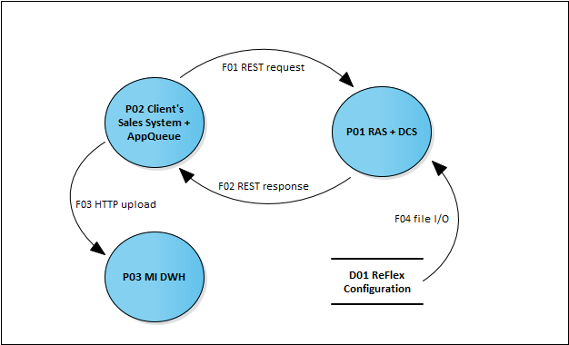

Security
Overview
To ensure the security of the ReFlex components that will be installed at the client’s site and regarding the security of the overall system, there are several measures that need to be implemented. Basically, these measures include actions that need to be taken to mitigate potential risks and threats. There are two kinds of threats that need to be mitigated:
- Threats that have been identified during the software development but can’t be mitigated by adapting the software design but rather by implementing infrastructure measures
- Threats that appear by introducing components that are not part of the core product, e.g. software that will be implemented as a part of the client integration project
To ensure the maximum security regarding personal data, there should be a detailed analysis if and where personal data is stored and if there are any legal constraints regarding the storage of personal data.
If a data protection concept exists (it should) review it to determine measures to be taken. Update or create a data protection concept to document storage of personal data. Don’t duplicate personal data if not needed and keep data theft in mind.
In addition to the below-listed mitigations, data stores that keep personal data need to be encrypted with the intention to reduce the risk of losing confidentiality, even in the case of a successful hacker attack.
In general TDE (transparent data encryption) is a good way to protect whole databases by encrypting the live tables as well as database logs and backups. Because TDE is transparent it is completely managed by the database administrator and there are no changes needed in application server logic. TDE could be implemented using software keys stored in a somewhat secure (encrypted file container / wallet) storage place or using hardware mechanisms like smartcards or HSMs (hardware security modules).
An alternative way is transparent attribute or column encryption which is proprietary and a part of the database abstraction layer or database server with the involvement of minor application server logic changes.
The client and the integrator are responsible for implementing security measures and risk mitigations as mentioned in the following sections. It has to be clear that the suggestions that are made do not claim to be a complete guide for securing the whole system. Additional security analysis should be implemented by involving security experts. This chapter is a starting point.
As a guidance the ISACA COBIT Security Baseline and (ISC) CISSP Common Body of Knowledge will help to understand, define and communicate security risks, counter measures, mitigations and processes on different levels (network, hosting, databases, backends, front-ends, 3rd parties, etc.) throughout the organization. Security itself is a process.
Threat modeling
RAS integration scenario
The high-level Threat Model of the RAS Integration Scenario is quite simple and contains elements that are out of scope of the security investigations of the integration project.

Description of the Threat Model elements:
| Element | in-scope | Notes |
|---|---|---|
| D01 ReFlex Configuration | (x) | KnowledgeBase and configuration files need to be deployed to the same server as P01 RAS + DCS. This server should be secured by application server- and infrastructure hardening. Nevertheless, access to all ReFlex components must be secured by setting proper file system access rights. |
| P01 RAS + DCS | x | Needs to be secured against common threats |
| P02 Client’s Sales System + AppQueue | Securing the client’s server infrastructure is not in scope of an integration project | |
| P03 MI DWH | This component is hosted and secured by Hannover Re’s hosting partner | |
| F01 REST request | x | Data flows to and from P01 RAS + DCS need to be secured if deployed seperately from P02 Cedent Sales System + AppQueue |
| F02 REST response | x | Same as F01 REST request |
| F03 HTTP upload | x | Securing the upload of assessment results is a must and will be described separately. Therefore this topic will not be covered here. |
| F04 file I/O | File-access is considered as secured by hardening the server infrastructure. |
Elements marked with “(x)” are only in scope if deployed separately and are part of communication that takes place outside of boundaries considered not being secure.
After applying the STRIDE-Methodology to the above elements, the following list of mitigations needs to be implemented:
Application hardening
Details on the proper configuration can be found in the RAS security documentation which is part of this document.
- Ensure to only expose REST resources to P02 Client’s Sales System, that are needed to implement the risk assessment process. Usually, the services to deploy or delete knowledge bases are not needed by risk assessment clients. Those resources should be disabled or should be secured by a separate authentication configuration. Preferably machine-to-machine and admin-to-machine communication is secured requiring TLS client authentication.
- Services are secured by HTTP basic auth - be sure to set sophisticated passwords, by applying best practice password policies, e.g. passwords should include upper-case and lower-case letters, numbers, special characters. Generate completely random passwords by encoding a random sequence into Base64 encoding. ‘openssl rand -base64 32’
- Ensure proper configuration of the logging features. Although ReFlex tries to avoid writing PII data into log files, it may happen that such data is stored there. So, please take into account the appropriate handling of log files depending on the legal needs of your country. We strongly recommend to use log file rotation to delete old data on a regular basis.
- Only deploy knowledge bases that are requested by the client and that are used in production
- If additional third party libraries, that are not part of the core product, are deployed, those libraries need to be scanned for known security issues. It is suggested to use available tools to do automatic library/library version and CVE lookups.
- Ensure that all source code that will be delivered/ deployed was scanned by a static source code analysis tool with a special focus on security rules and metrics.
Application server hardening
- Reduce fingerprinting (remove any kind of server banner, default error pages, etc.).
- Enable access logging.
- Disallow direct access to application server resources by setting up an Apache web server and configure it as reverse proxy (this one must be hardened also). nginx provides fast reverse proxying and has plenty of security related examples available. Additionally sniproxy (or upcoming nginx equivalent) helps to stop scans / attacks on TLS ports without correct server name indication. Suggested setup: Benefit is port 443 is claimed by sniproxy and forwarded to nginx instance. No other service than sniproxy ever needs to be root to claim a port. The same can be achieved using firewall forwarding rules.
- Run the application server from a non-privileged account.
- Remove any kind of static or dynamic content that is not used by RAS or DCS (e.g. welcome page, management-console, documentation, …).
- Only use application server versions with no known security issues.
- Limit the max. allowed message size for incoming and outgoing messages.
Infrastructure and server hardening
- Implement anti (D)DoS measures, e.g. by setting up an anti (D)DoS appliance, configuring mod_evasive in the Apache web server or by using other intrusion detection/ prevention systems.
- Only use server/ OS versions with no known security issues. Use FreeBSD machines for front-ends executing sniproxy and/or nginx. They are a less common attack target, well supported, usually outperform Linux on high loads and are generally focused on security.
- Limit access to the Apache web server/reverse proxy by using a firewall. Allow access through that firewall only to ports and protocols that are used in production.
- Ensure a backup and recovery plan. Front-ends shall be restartable and arbitrarily interchangeable from a fixed read-only filesystem.
- Ensure business continuity management regarding ReFlex services.
Data flow encryption
- Data flows from and to P01 RAS + DCS must be TLS encrypted by setting up mutual certificate based HTTPS connections that are terminated at the Apache web server (TLS1.2, TLS_ECDHE_ECDSA_AES*_GCM)
- Ensure to only use SSL versions that are known to be secure. Don’t allow any communication below TLS1.2 with perfect secrecy ciphersuites enabled.
Pentests and fuzzing
- Execute tool-based and automated penetration tests and fuzzing attacks against ReFlex-Services.
- Ensure that extensive penetration tests are planned and executed before the system goes into production and before major updates. Those tests should be executed by an external IT-Security company and should cover the system as a whole. IT-Security companies are usually specialized to certain system designs / languages / sub-domains of the IT-Security landscape. Ask them at least for network security, application security, access control and security architecture and design.
CEP integration scenario
The high-level Threat Model of the CEP Integration Scenario adds several elements to the RAS Integration Scenario. P01 RAS + DCS are not directly exposed to external clients, but rather will be invoked exclusively by the P04 CEP backend. So the mitigations listed in the previous section do not apply to P01/ F01/ F02 but are suitable to secure P04 CEP backend and the data flows F07 and F08 (from and to the P04 CEP backend).

Description of the Threat Model elements:
| Element | in-scope | Notes | ||||
|---|---|---|---|---|---|---|
| D01 ReFlex Configuration | (x) | KnowledgeBase and configuration files need to be deployed to the same server as P01 RAS + DCS. This server should be secured by application server- and infrastructure hardening. Nevertheless, access to all ReFlex components must be secured by setting proper file system access rights. | ||||
| P01 RAS + DCS | Not directly exposed | |||||
| P02 Client’s Sales System (backend) + AppQueue | Securing the client’s server infrastructure is not in scope of an integration project | |||||
| P03 MI DWH | This component is hosted and secured by Hannover Re’s hosting partner | |||||
| F01 REST request | (x) | Data flows to and from P01 RAS + DCS need to be secured only if deployed separately from P04 CEP backend | ||||
| F02 REST response | (x) | Same as F01 REST request | ||||
| F03 HTTP upload | x | Securing the upload of assessment results is a must. | ||||
| F04 file I/O | File-access is considered as secured by hardening the server infrastructure. | |||||
| P04 CEP backend | x | Must be secured | ||||
| P05 CEP frontend | Will be deployed to the same server that serves P06 Sales System frontend to an Application Server that is under control | |||||
| P06 Client’s Sales System frontend | Under control of the Client’s Sales System IT Operations team | |||||
| F05 / F06 | x | Need to be secured if P05 CEP frontend is deployed separately from P04 CEP backend | ||||
| F07 / F08 | x | Need to be secured if P02 Client’s Sales System (backend) + AppQueue is deployed separately from P04 CEP backend | ||||
| F09 / F10 | Under control of the Client’s Sales System IT Operations team | |||||
Elements marked with “(x)” are only in scope if deployed separately and being part of communications that take place outside of boundaries considered not being secure.
The following list of mitigations implies that
- P01 RAS + DCS is not directly exposed and is deployed separately from P04 CEP backend. Nevertheless, all hardening measures mentioned in the previous chapter should be applied to secure artefacts and data even if P04 CEP backend has been taken over by malicious attackers. Mitigations and measures will not be listed explicitly in this chapter.
- P05 CEP frontend and P06 Client’s Sales System frontend are deployed to the same (application) server that is not in control of the integration team. P05 CEP frontend is a set of static files (HTML, CSS) and JavaScript code (based on AngularJS) that will be interpreted in the end user’s browser. Nevertheless, communication between the end user’s browser and the P04 CEP backend needs to be secured as described in the following section.
Mitigations include the following measures:
Application hardening
Details on the proper configuration can be found in the CEP Documentation which is part of this document.
- Ensure to only expose REST resources to P02 Client’s Sales System (backend) and P05 CEP frontend, that are needed to implement the sales process. Important is that the integration service, that is part of the P04 CEP backend is only accessible by the P02 Client’s Sales System (backend) and that only the assessment service and the document service are active and exposed to P05 CEP frontend in addition to the integration service.
- Communication between P05 CEP frontend and P04 CEP backend is secured by a JSON Web Token mechanism. Those tokens will be signed, so it’s important to have a secure configuration of the Java keystore.
- Ensure proper configuration of the logging features.
- If additional third party libraries, that are not part of the core product, are deployed, those libraries need to be scanned for known security issues.
- Ensure that all source code that will be delivered/ deployed was scanned by a static source code analysis tool with a special focus on security rules and metrics.
Application server hardening Check the suggestions from the previous section on application server hardening.
Infrastructure and server hardening Check the suggestions from the previous section on infrastructure server hardening.
Data flow encryption
- Data flows between P02 Client’s Sales System (backend) and P04 CEP backend (F07/ F08) must be SSL encrypted by setting up mutual certificate based HTTPS connections that are terminated at the Apache web server.
- Data flows between the P05 CEP frontend and the P04 CEP backend (F05/ F06) must be SSL encrypted by using server certificates that are signed by a trusted certification authority.
- Ensure to only use SSL versions that are known to be secure.
Special note on penetration tests
Although all of the above-suggested measures to improve the system’s security can’t be enforced, it is highly recommended to insist on an appropriate implementation of penetration tests.
Hannover Re can support this by providing guidance or by handing over a list of security consultancies that have been doing penetrations tests for Hannover Re in the past.